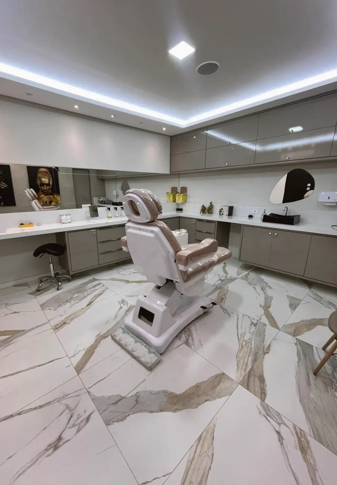
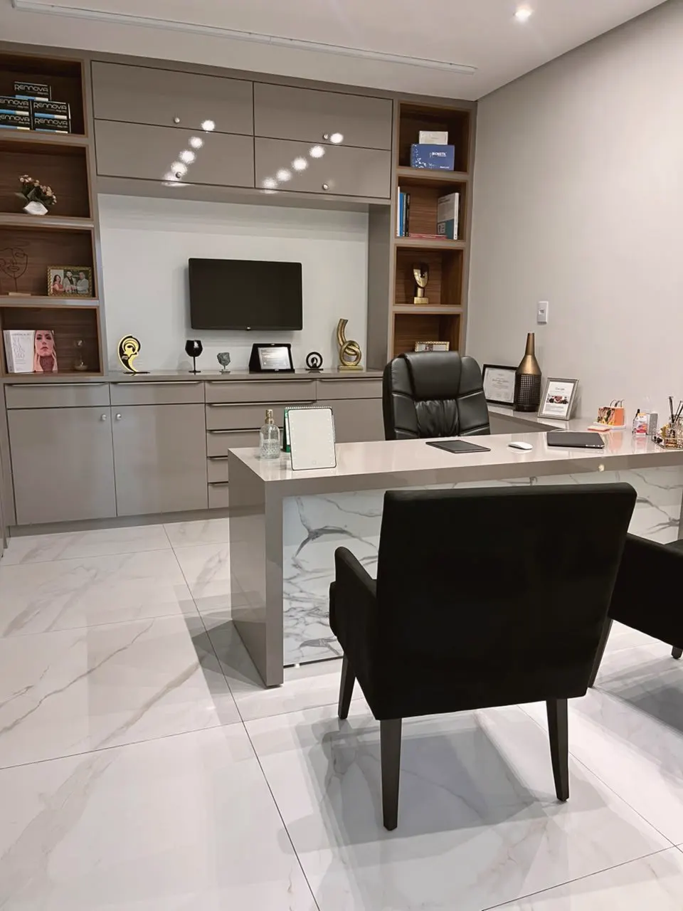

Sua beleza, do seu jeito, com naturalidade.
Rosto, pele, sorriso e corpo cuidados por uma equipe que conversa entre si. Você conta o que te incomoda; a gente monta o caminho junto com você.
Comece pelo que te incomoda.
Escolha abaixo o que mais se parece com a sua queixa. Daqui pra frente é com a gente: descobrimos a causa e te ajudamos a resolver.


Resultado bonito é o que parece seu.
O IHFC nasceu para reunir, num só lugar, quem cuida do rosto, da pele, do sorriso e do corpo. Assim o seu plano é pensado por inteiro, com cada profissional na sua área.
- Avaliação sem pressa, com planejamento por escrito
- Equipe multiprofissional com registro no conselho de cada área
- Acompanhamento no pós: a gente cuida de você depois também
- Espaço confortável e acessível no Jequiezinho
Dr. Glautium GabrielDiretor e responsável técnico · Especialista em Harmonização Orofacial e em Cirurgia e Traumatologia Bucomaxilofacial · CRO-BA 16384
Do primeiro “oi” ao pós, você não fica sozinha.
Conversa
Você chama no WhatsApp, conta o que te incomoda e a gente marca a avaliação.
Avaliação
O profissional examina, explica a causa e tira todas as dúvidas, sem pressa.
Planejamento
Você recebe um plano com as opções, as etapas e o que esperar de cada uma.
Cuidado no pós
Orientações por escrito, retornos marcados e a equipe por perto se surgir dúvida.
Tudo o que você precisa, em um só lugar.
Harmonização facial
Rugas, contorno, papada, flacidez, lábios, nariz e olheiras.
Pele
Manchas, melasma, acne, cicatrizes, limpeza de pele e viço com o protocolo Revitalli.
Sorriso
Limpeza e prevenção, canal, restaurações, próteses, implantes, lentes, clareamento, ortodontia e gengivas.
Corpo
Barriga, bumbum, seios, pernas e vasinhos com avaliação médica.
Dermatologia e emagrecimento
Queda de cabelo, suor excessivo, pintas e emagrecimento acompanhado.
Bem-estar
Nutrição, fisioterapia, drenagem, massoterapia e podologia.
Tecnologias
O recurso certo depende da sua avaliação: ter o equipamento não significa que ele seja indicado para todos.
Quem cuida de você.
Dr. Glautium Gabriel
Harmonização Orofacial e Cirurgia Bucomaxilofacial
CRO-BA 16384
Dra. Ionara Caroso
Médica · estética, corpo e dermatologia
CRM-BA 16679
Dr. Hudson D. Soares
Implantes, estética e reabilitação oral
CRO-BA 23283
Dra. Juliana Coelho Moreno
Implantes, estética dental e atendimento infantil
CRO-BA 27601
Dr. Mateus
Tricologia e implante capilar

Dra. Jéssica Lopes
Biomédica esteta · toxina, bioestimuladores e microvasos
CRBM 15493Maria Eduarda Brisola
Esteticista · limpeza de pele, peeling e microagulhamento

Sabrina Amparo
Nutricionista
CRN-5 20406
Gisele Gomes
Fisioterapeuta
CREFITO-7 441870-F
Maria Neuza
Podóloga

Natieli Batista
Enfermagem, feridas e massoterapia terapêutica
COREN-BA 000.983.427-ENFQuem faz tudo funcionar.
Jaiane Santos
Gestora em saúde pública e privada · MBA em sistema gerencial e organizacional
Luísa
Recepção
Sara
Financeiro
Suely
Equipe IHFC
Poliana
Comunicação
Um lugar feito para você se sentir bem.

- Recepção acolhedoraEscuta desde o primeiro contato e um cappuccino para a sua chegada.
- Sala VIPConforto e privacidade durante a sua visita.
- Salas climatizadasAtendimento com temperatura controlada e estoque climatizado 24 horas.
Palavras de pacientes.
“Iniciei meu tratamento de melasma e me sinto satisfeita pelo profissionalismo e pelo cuidado da equipe.”Mirian S. · Google
“Os cuidados com os pacientes no pós é o que cativa nós como clientes.”Mari S. · Google
“Desde a recepção à consulta, tirando todas as dúvidas e orientando o melhor procedimento.”Maria P. · Google
Antes de agendar.
Preciso saber qual procedimento quero?
Não. Conte o que te incomoda; na avaliação o profissional identifica a causa e explica as opções, inclusive quando não indicar nada.
O resultado fica artificial?
O planejamento respeita as proporções do seu rosto e do seu corpo. A ideia é você parecer descansada e você mesma, não outra pessoa.
Quanto custa?
Depende do plano indicado para o seu caso. Na avaliação você recebe as opções e os valores com clareza, sem surpresa.
Dói? Preciso ficar afastada?
Usamos anestesia e técnicas para conforto. O tempo de recuperação varia por procedimento e é explicado antes, com orientações por escrito.
Atendem urgência?
Sim, o Dr. Glautium é cirurgião bucomaxilofacial. Fale com a gente pelo WhatsApp para orientação.
O primeiro passo é uma conversa.
Mande uma mensagem contando o que te incomoda. Nossa equipe responde e encontra o melhor horário para você.
Chamar no WhatsApp · (73) 98150-7715Horário
Seg. a sex.: 8h às 12h e 14h às 18h
Sábado: 8h às 12h